Lengua y herencia
Robert Esposito and Maggie Blackburn
Rutgers University
2026-11-09
Fundamentos
- Somos RU Bilingual
- Estudiantes graduados del departamento de español y portugués de la Universidad de Rutgers
- Estudiamos el bilingüismo y la adquisición de una segunda lengua
- Queremos que nuestra investigación sea útil para un público más amplio
- Queremos crear un espacio seguro para debatir sobre el multilingüismo en nuestras comunidades
- Apoyar y defender el bilingüismo en el hogar, en la escuela y en nuestra comunidad
- Permitir que la investigación académica tenga más aplicaciones prácticas
Lo que vamos a cubrir
¿Qué heredamos?
¿Qué son las actidudes lingüísticas?
¿Cómo reflejamos nuestras comunidades en nuestras formas de hablar?
Hablantes de herencia
¿Qué heredamos?
¿Qué heredamos?
¿Qué heredamos de nuestras familias?
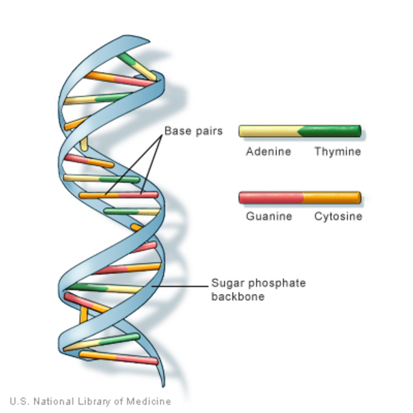
¿Qué heredamos de nuestras comunidades?
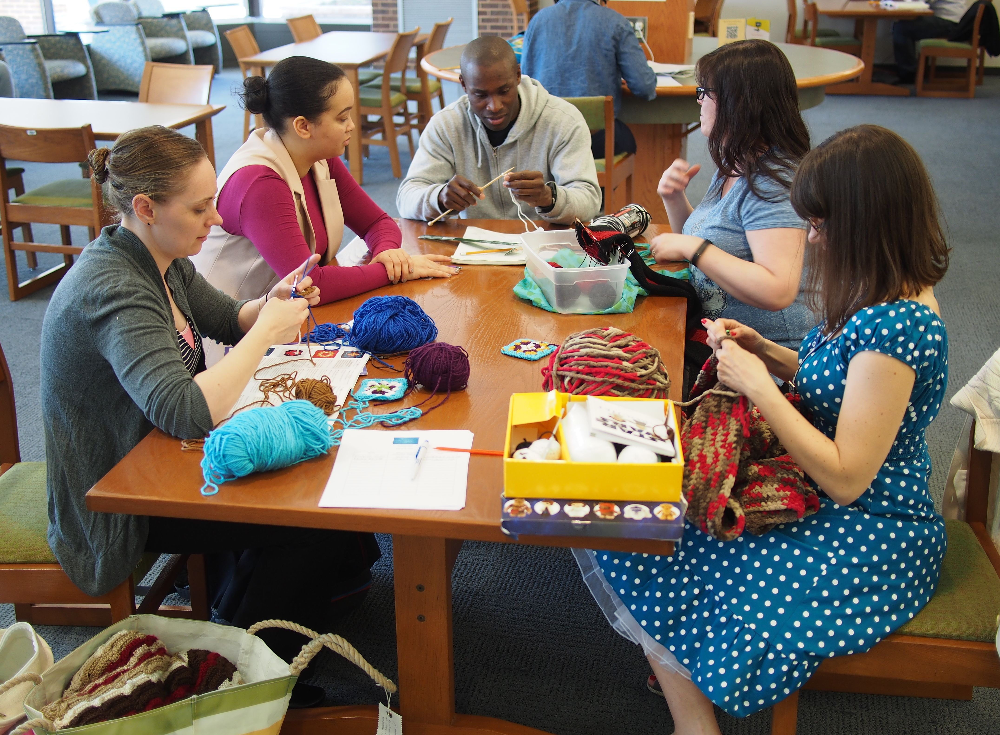
¿Qué heredamos de nuestras comunidades?
- Destrezas
- Conocimiento
- Experiencia
La lengua como herencia
¿Qué aspectos de la lengua heredamos?
¿Qué aspectos de la lengua heredamos?
- Las palabras
- Los sonidos
- La jerga
- El lenguaje corporal
- Las actitudes lingüísticas
Actitudes lingüísticas
Actitudes lingüísticas
Las actitudes pueden ser positivas o negativas
fuente: https://hispaniclinguistics.com/glosario/actitud-linguistica/
Actitudes lingüísticas
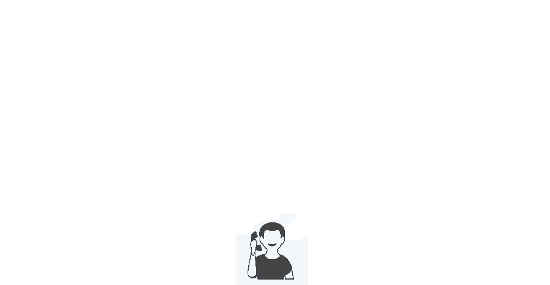
Baugh (2003)
Actitudes lingüísticas
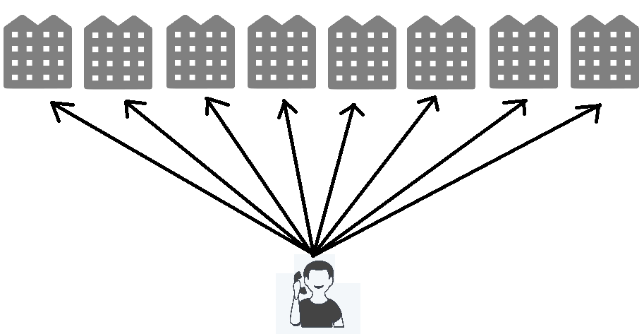
Baugh (2003)
Actitudes lingüísticas
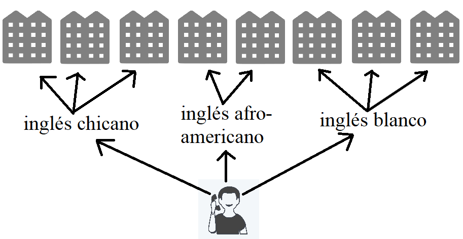
Baugh (2003)
Actitudes lingüísticas
¿De qué otras maneras pueden las actitudes lingüísticas afectan a las personas?
Actitudes lingüísticas
Nuestras comunidades y formas de hablar
¿A qué comunidades pertenecemos?
- ej.
- nacionalidad
- religión
- una clase de lengua
- trabajador
- sexualidad
- género
- …?
¿A qué comunidades pertenecemos?
¿Hablas de un cierto modo por ser parte de una comunidad?
- ej.
- los méxicanos pueden pronunciar ‘tl’ como en la palabra ‘tlacote’, mientras que otras variedades tienen dificuldades a pronunciarla
- trabajas en una fábrica y conoces muchas palabras especializadas
- los españoles parecen maleducados
- ¿por qué será?
Hablantes de herencia
Hablantes de herencia
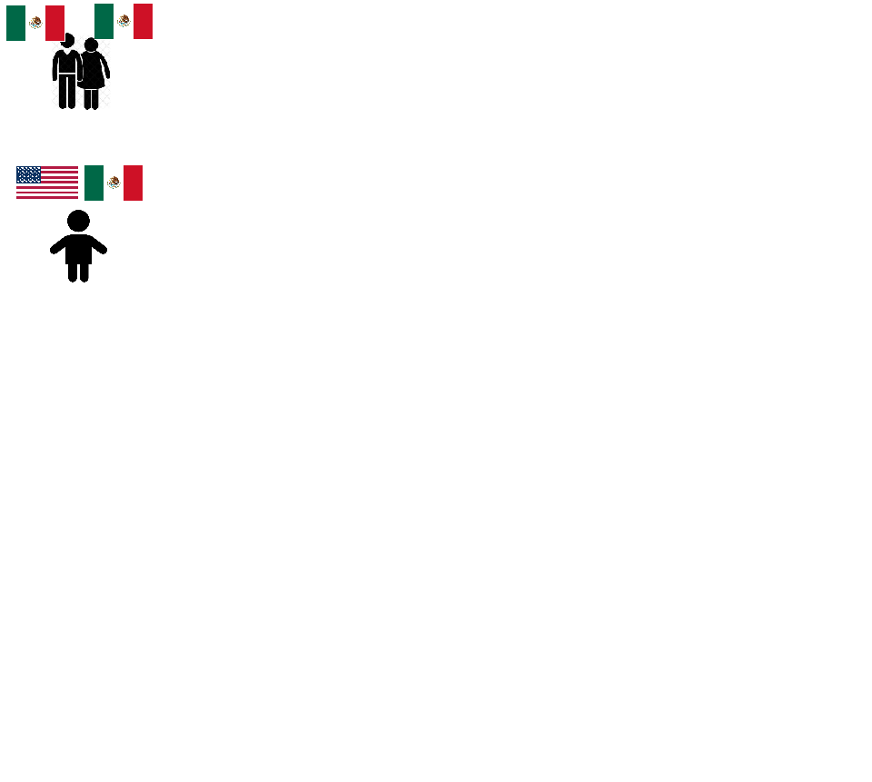
Hablantes de herencia
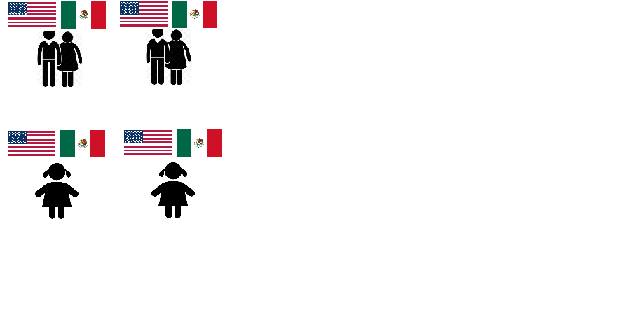
Hablantes de herencia
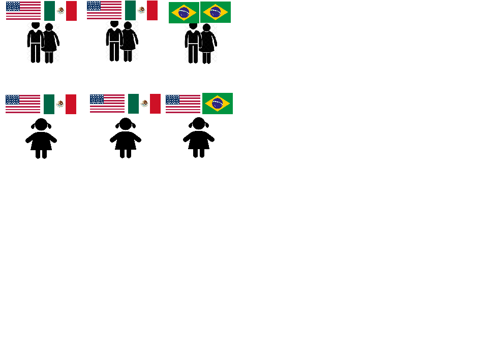
Hablantes de herencia
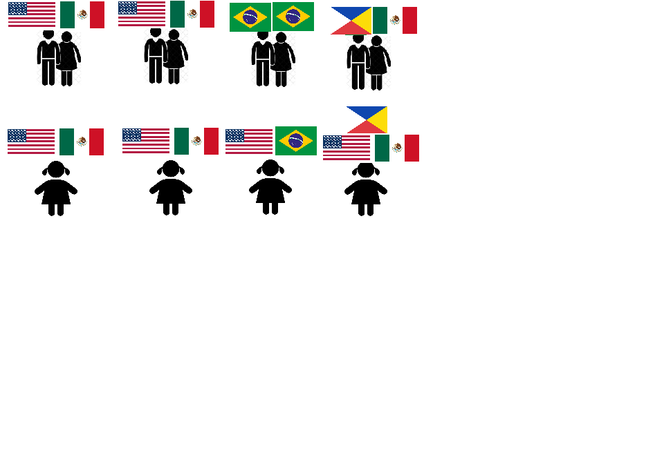
Tipos de bilingües
bilingüe receptivo: puede entender y/o leer, pero tiene dificuldades al hablar/escribir
bilingüe productivo: puede entender y hablar
Hablantes de herencia
¿Cómo hablan los hablantes de herencia de español en estados unidos?
¿Usted tiene hijos que son bilingües?
¿Has notado errores comunes?
“No sabo”
¡Los ‘errores’ tienen orígenes lógicos!
¿Qué motivación tiene un hablante de herencia decir ‘no sabo’ en vez de ‘no sé’?
La analogía
beber
Yo… bebo
comer
yo… como
aprender
Yo… aprendo
saber
Yo… sabo?
Bilingües nativos y la mente
Los bilingües nativos…
- tienen que aprender dos idiomas a la misma vez
- tienen menos exposición a las dos lenguas comparados con monolingües
- normalmente hablan los dos idiomas en contextos específicos
Bilingües nativos y la mente
¿Cuándo te toca usar el español?
¿Cuándo crees que un bilingüe nativo en EEUU usa el español?
¿Cuándo te toca usar el inglés?
¿Cuándo crees que un bilingüe nativo en EEUU usa el inglés?
Una mente, dos idiomas
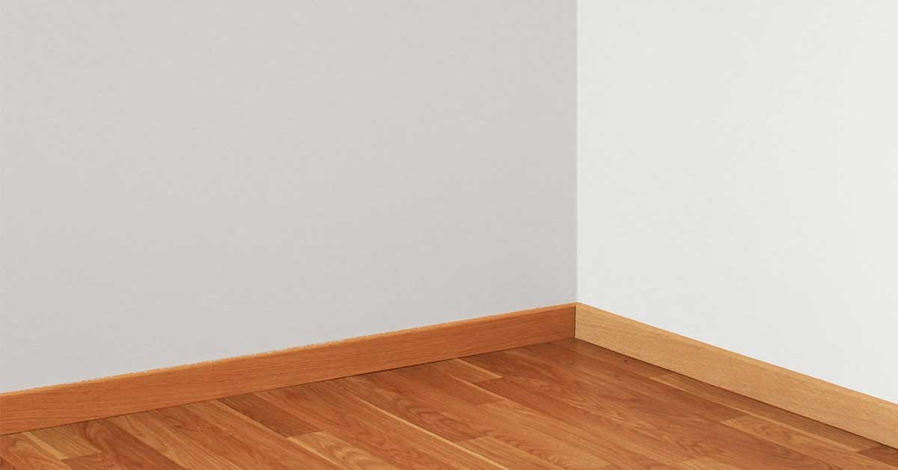
Una mente, dos idiomas
esquina
rincón
Una mente, dos idiomas
esquina
rincón
Una mente, dos idiomas
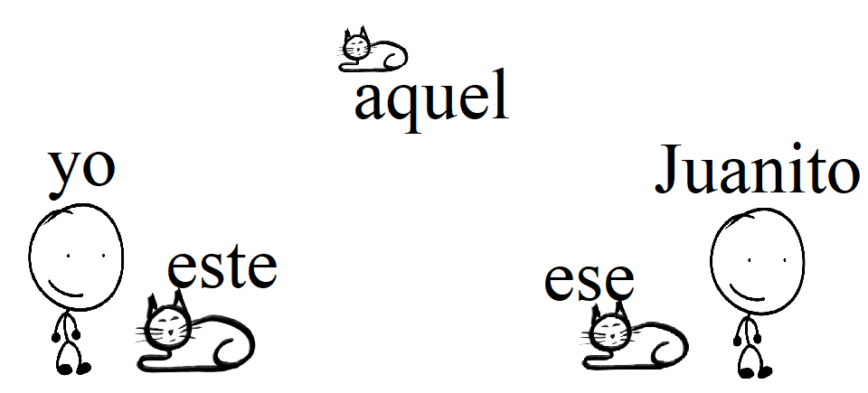
Una mente, dos idiomas
Aunque cometan “errores” al hablar, los hablantes de herencia están tratando de resolver dos sistemas al mismo tiempo
Buscan patrones en los dos idiomas y a veces los patrones se cruzan
¿Cómo puedo apoyar a mis hijos?
Dejarlos hablar sin juzgar
Corregirles mucho NO AYUDA
Usar el español en contextos diferentes
La herencia
El español es una forma de herencia que tienen sus hijos
Es importante mantener el idioma porque le da una perspectiva diferente del inglés a la realidad
¡Gracias!
@ru_bilingual
Slides
link to bilingual children’s books
| @ru_bilingual | |
| rme70@scarletmail.rutgers.edu | |
| robertespo.github.io | |
| @RobertEspo | |
| jvcasillas.com/quarto-rutgers-theme |